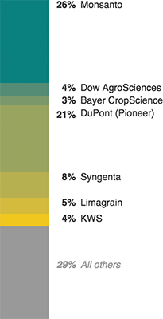

Big Firms Dominate The Global Seed Market
The seed industry as poised for further consolidation: DuPont (Pioneer) is in the process of merging with Dow AgroSciences, and Monsanto is reportedly considering a merger with Bayer CropScience.
